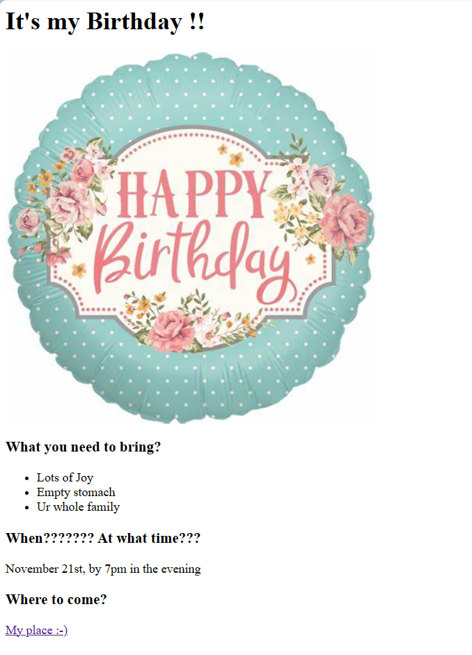

Vaishnavi Busam
Undergraduate Student Intern
Contact Info
Objective:
With a solid understanding of data structures and fluency in a variety of programming languages, I am an effective leader with great problem-solving ability. I approach each task with dedication since I am passionate about my work. Real-world projects excite me, and I'm always looking to improve my knowledge and abilities. I am willing to work with dynamic teams and make a significant contribution to creative projects.
Education:
Bachelor's of Technology, GITAM University (2021-2025)
I’m pursuing my graduation in Computer Science Engineering with specialisation in Artificial Intelligence and Machine Learning.
CGPA: 9.44
12th Grade, Bhavishya Junior College (2019-2021)
Completed my 12th grade in State Board of Andhra Pradesh.
Percentage: 97.7
10th Grade, Nalanda Vidya Niketan (2018-2019)
Completed my 10th grade in Central Board of Secondary Education.
Percentage: 94.2
Skills:
- Python Programming
- C programming
- Java Programming
- Data Structures and Algorithms
- HTML, CSS
- Communication Skills
- Presentation Skills
- Leadership Skills
- Adaptability
- Problem Solving Skills
Achievements:
- Participated in C workshop:
Technical Club, CODEX, conducted a C workshop to help our Juniors to have a better knowledge on C programming Language. This workshop provided me with an opportunity to deepen my understanding of the language, enhance my communication and leadership skills, and contribute to the learning and growth of my peers.
- Participated in Robotic Workshop:
Participating in the robotics workshop organized by our university allowed me to gain practical experience in robotics, refine my problem-solving abilities, collaborate with peers, and contribute to the advancement of technology within the university community.
- Participated in Hackathon conducted by IISc:
Project Name: Crop Price Prediction based on Machine Learning.
I learned to manipulate the datasets and extract useful features out of it using python libraries (Pandas, NumPy, Matplotlib, SciKit-learn).
Previous Web development Projects
Movie Ranking
I made a website with
- Paragraph tags
- Heading tags
- Horizontal line tag
The preview of the website is shown in the below picture and to view it completely kindly click on the link.

Birthday Invite
I made a webiste which invites for a birthday party with the help of
- Paragraph tags
- Heading tags
- Lists
- Image tags
- Anchor tag to locate my place
The preview of the website is shown in the below picture and to view it completely kindly click on the link.

Languages:
- English
- Telugu
- Hindi